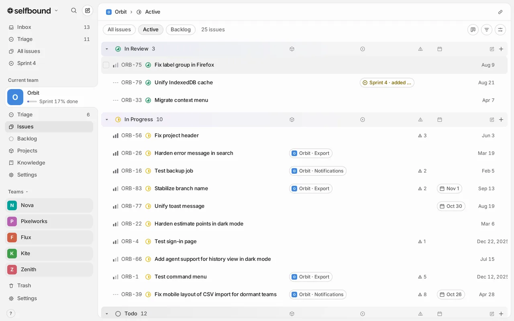
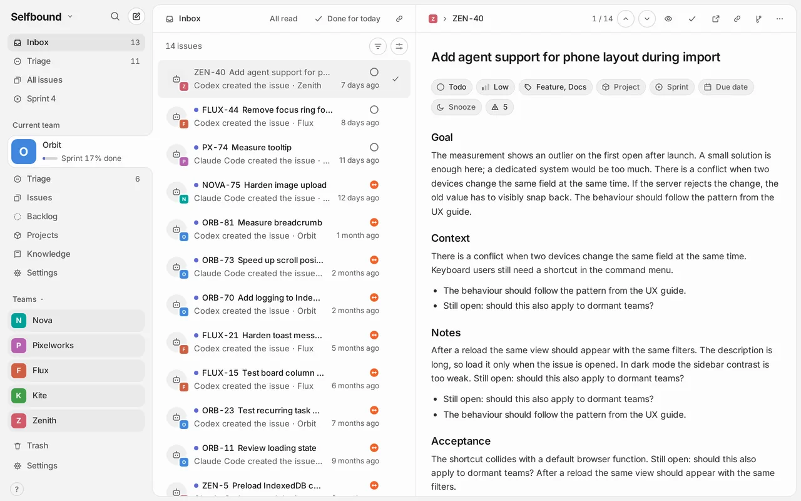

Fast with 10,000 issues
The workspace lives in memory and syncs in the background. Opening, filtering and changing issues takes 20–35 ms at the 95th percentile, measured with 10,000 issues. The budget is 100 ms.
Open source · Self-hosted
Selfbound answers within a frame and runs from the keyboard. Your agents read and change issues over MCP, and every change lands in an inbox for you to review.

The workspace lives in memory and syncs in the background. Opening, filtering and changing issues takes 20–35 ms at the 95th percentile, measured with 10,000 issues. The budget is 100 ms.
JKmoveSstatusCcreateCtrlK
Every action has a key and a command menu entry, and undo covers nearly everything. The mouse is optional.
search_issuescreate_issuesset_statusadd_comment
Claude, ChatGPT and coding agents read and update issues through MCP, each with its own key or connector. The history shows which agent changed what.
Issues that agents create wait in your inbox until you have looked at them. Read them, mark them read or remove them with a key.
Linked pull requests show their state, checks and reviews on the issue, live through webhooks, and open full size inside Selfbound.
Plan two weeks once, for every team at the same time. A sprint only closes when each open issue has a decision: next sprint, backlog or cancel.
Agents
Point Claude Code, Codex or any MCP client at your instance. Agents create and update issues, comment, search and write knowledge pages; there is no tool for teams. Each one has its own key, its own rate limit and its own name in the history.
Coding agents connect with a key from the app; Claude and ChatGPT connect as a connector and sign in with your login. How agents connect.
What they create goes to your inbox. You step through it with J and K, remove what is done with Backspace, and move on.

Most popular issue trackers are built for teams and sold as a service. Selfbound is built for one person and their agents.
| Topic | Most popular trackers | Selfbound |
|---|---|---|
| Where it runs | Mostly a hosted subscription service | On your own accounts: your Convex project, your Clerk application, your static host |
| Source | Proprietary software | Open, AGPL-3.0 |
| Built for | Teams: members and seats | One owner and their agents: no assignees, no seats |
| Cost | Paid plans priced per user | No licence fee; you pay only for the services you host on |
As of October 2026, based on the public pricing and product pages of widely used trackers.
Self-hosted
Each instance belongs to one owner and uses its own Convex project, Clerk application and static host. Nothing is shared with anyone else, and your data stays in your account. To try it first, one command starts a local backend with sample data and no account.
git clone __GITHUB__.git selfbound
cd selfbound
pnpm install
pnpm devHow it was built
Selfbound was built with AI coding agents. Product, design and review by Steven Hernandez, who decided what to build and how it should feel, and checked every change before it shipped.